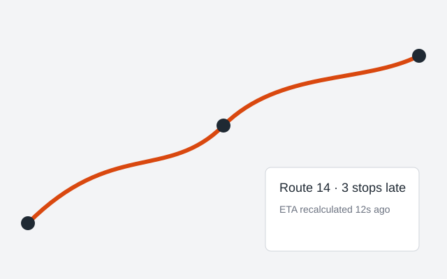

Northwind turns raw telematics into a live dispatch board your operators actually read. Built for regional carriers with 20 to 2,000 vehicles.
No credit card. Cancel anytime.

Updated every 30 seconds from vehicle GPS, traffic and driver hours.
Only the stops that need a human decision reach your dispatchers.
Shippers see their own deliveries without calling your team.
| Metric | Before | After Northwind |
|---|---|---|
| On-time delivery | 82% | 96% |
| Calls per dispatcher / day | 140 | 35 |
| Empty miles | 19% | 11% |
Samsara, Geotab, Motive and any provider with a REST or webhook API.
Most fleets are live in under two weeks.